Un hackathon est un événement d'innovation intensive, généralement limité dans le temps, au cours duquel des équipes collaborent pour concevoir et réaliser un projet concret à partir de contraintes imposées. L'EPHEC organise chaque année son propre hackathon, invitant les étudiants à créer un objet utile ou original à partir de matériel ancien ou défectueux. L'objectif n'est pas uniquement technique : il s'agit aussi de travailler en équipe sous pression, de prendre des décisions rapides et de présenter un résultat fonctionnel dans les délais impartis.
| Thème | Activité | Heures comptées | Heures réelles |
|---|---|---|---|
| Électronique | Hackathon EPHEC 2024 ▾ | 10 | ~22 |
|
En octobre 2024, j'ai participé au Hackathon organisé par l'EPHEC dans le cadre duquel les équipes devaient concevoir un objet utile à partir d'un appareil ancien ou défectueux. Avec mon groupe de six personnes, nous avons choisi de transformer un vieux coffre en borne d'arcade fonctionnelle, en y intégrant un écran LCD, des joysticks et boutons d'arcade, ainsi qu'un Raspberry Pi comme cerveau du système. Nous avons installé sur le Raspberry Pi un OS communautaire dédié à l'émulation de jeux rétro. L'installation n'a pas été sans embûches : nous avons rencontré plusieurs problèmes lors de la mise en place de l'OS, ce qui nous a obligés à troubleshooter en temps réel, sans filet et avec une contrainte de temps forte. Le câblage physique des joysticks et boutons constituait l'autre défi majeur du projet, nécessitant rigueur et méthode pour aboutir à un résultat propre et fonctionnel. Nous avons terminé le projet dans les délais et décroché la deuxième place, ce dont je suis assez fier pour une première participation. Cette expérience m'a appris à travailler efficacement en groupe sous pression, à ne pas paniquer face à un problème technique inattendu, et à comprendre que dans ce type d'environnement, la capacité à improviser et à s'adapter vaut autant que les connaissances théoriques. Pour quelqu'un qui se dirige vers l'administration systèmes, savoir gérer un incident technique calmement et méthodiquement est une compétence fondamentale — ce hackathon en a été une première mise en pratique concrète.
Preuve de participation
Trois photos prises lors du Hackathon 2024 : la première me montrant avec deux membres du groupe en train de présenter la planche sur laquelle sont montés les boutons et joysticks ; la deuxième montrant une grande partie du groupe, dont moi au fond, observant le rendu quasi final de la borne ; la troisième présentant le rendu final de la borne d'arcade complète. 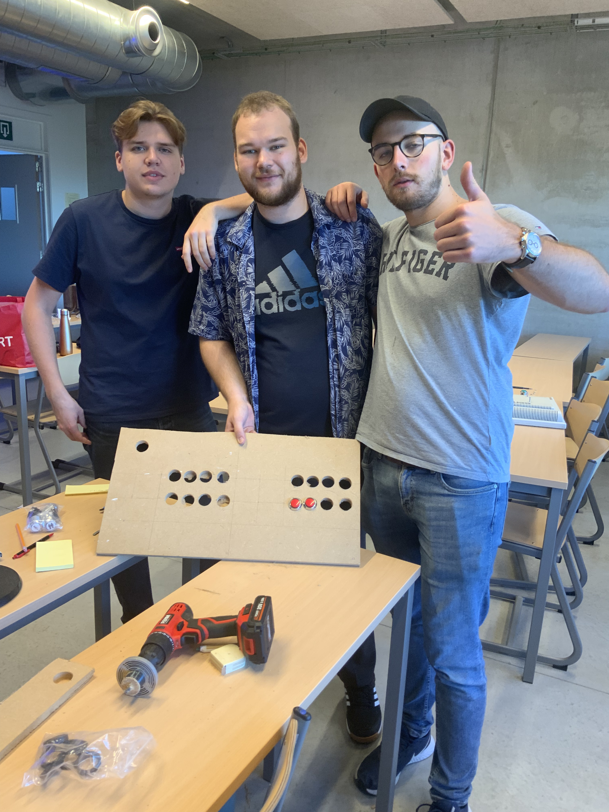 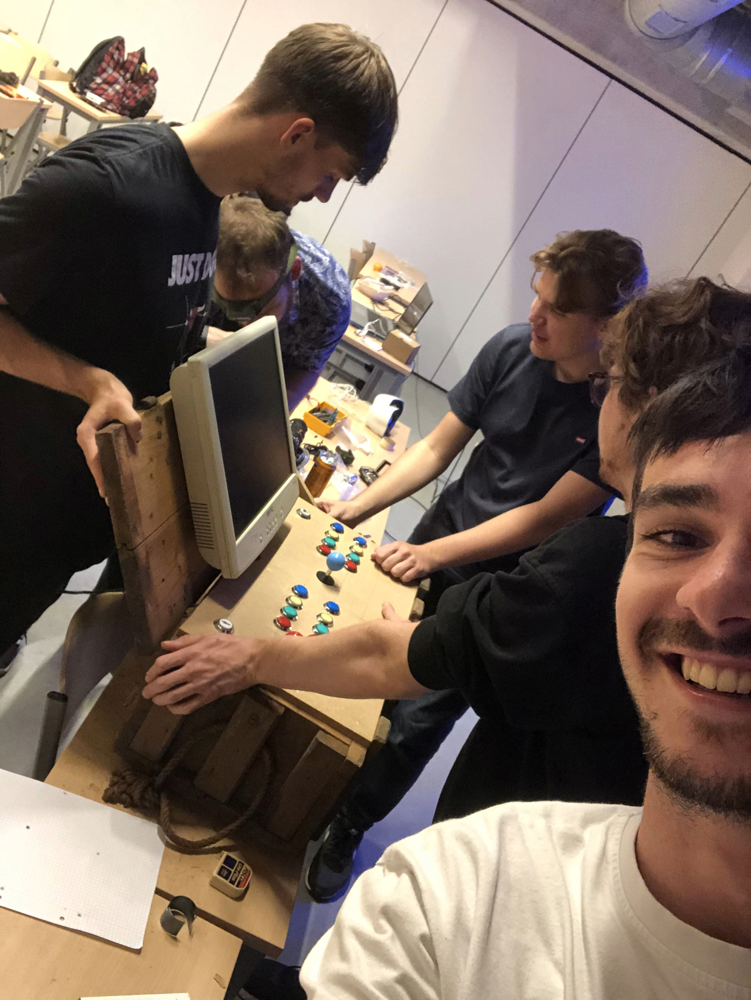 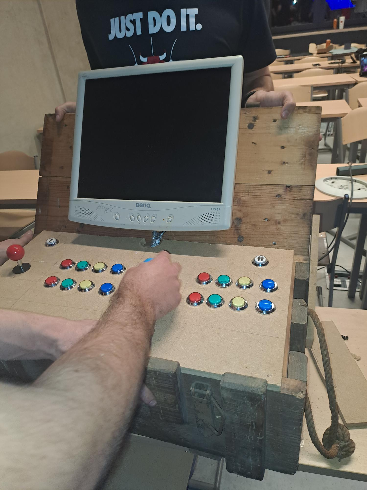 |
|||
| Développement | Hackathon EPHEC 2025 ▾ | 10 | ~22 |
|
En octobre 2025, j'ai à nouveau participé au Hackathon EPHEC, cette fois en équipe de cinq personnes, avec un défi particulièrement ambitieux : transformer une machine à écrire électronique défectueuse en un ordinateur complet et fonctionnel. Le projet consistait à désosser un ancien laptop Dell pour en extraire la carte mère et l'écran, puis à les intégrer dans le boîtier de la machine à écrire, en conservant la batterie d'origine pour l'alimentation. Le clavier de la machine à écrire a quant à lui été converti en clavier USB grâce à un microcontrôleur Pi Pico — ce qui a nécessité de déchiffrer manuellement sa matrice à l'aide d'un multimètre, touche par touche, sans aucune documentation disponible. Toutes les touches présentes ont pu être mappées et fonctionnent correctement ; certaines touches modernes sont simplement absentes physiquement, la machine à écrire ne les ayant jamais possédées. L'objectif final était d'en faire un émulateur Apple II, ce que nous avons pleinement atteint : la machine était fonctionnelle lors de la démonstration finale, émulateur tourné à l'appui. Ce projet m'a particulièrement marqué parce qu'il combinait plusieurs disciplines en même temps — électronique, scripting, intégration matérielle et système — dans un contexte sans filet et sous contrainte de temps. Cette capacité à assembler des compétences variées pour résoudre un problème concret est exactement ce qu'on attend d'un administrateur systèmes.
Preuve de participation
Photo me montrant avec un autre membre du groupe devant le produit fini — la machine à écrire électronique transformée en émulateur Apple II. 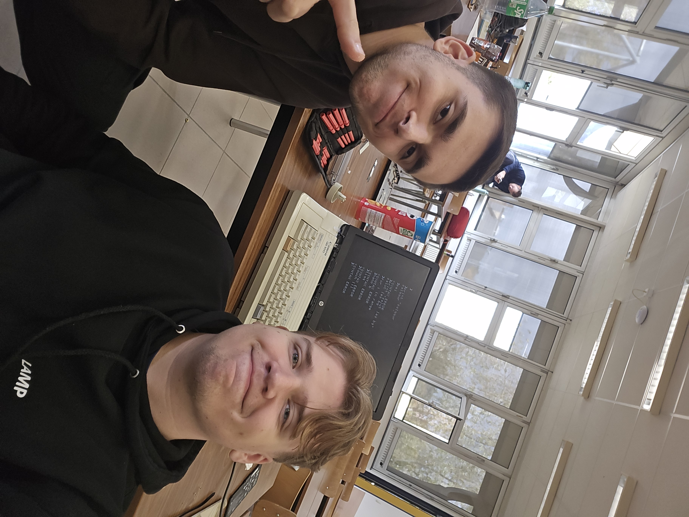 |
|||
| Sécurité Web | Formation OpenClassrooms — Conduct a Web Penetration Test ▾ | 10 | 10 |
|
OpenClassrooms est une plateforme d'e-learning française proposant des formations certifiantes dans le domaine du numérique. Les cours y sont structurés en parcours progressifs, combinant vidéos, lectures et exercices pratiques, avec la possibilité d'obtenir une attestation de complétion à l'issue de la formation — ce que j'ai obtenu pour cette formation. J'ai suivi une formation portant sur le Penetration Testing, soit la pratique consistant à tester la sécurité d'une application ou d'un site web en adoptant le point de vue d'un attaquant, dans le but d'identifier des vulnérabilités avant qu'elles ne soient exploitées de manière malveillante. La formation couvrait plusieurs techniques : les attaques de type Man-in-the-Middle, les injections SQL, la découverte de pages non documentées, et l'utilisation de Burp Suite pour intercepter et manipuler des requêtes HTTP. L'outil qui m'a particulièrement intéressé est FFUF, un outil de fuzzing permettant de découvrir des ports ouverts et des ressources cachées sur un serveur afin de les analyser et potentiellement les exploiter. Sa rapidité et sa flexibilité en font un outil redoutablement efficace dans une démarche de reconnaissance offensive. Pour un futur administrateur systèmes et réseaux, la sécurité n'est pas optionnelle — elle est au cœur du métier. Comprendre comment un attaquant pense et quels outils il utilise me permet d'appréhender la sécurité de façon proactive plutôt que réactive, en anticipant les vecteurs d'attaque plutôt qu'en les subissant.
Preuve de participation
Deux captures d'écran issues de la plateforme OpenClassrooms : la première affichant le nombre d'heures comptabilisées pour la formation, la seconde confirmant la complétion de celle-ci. 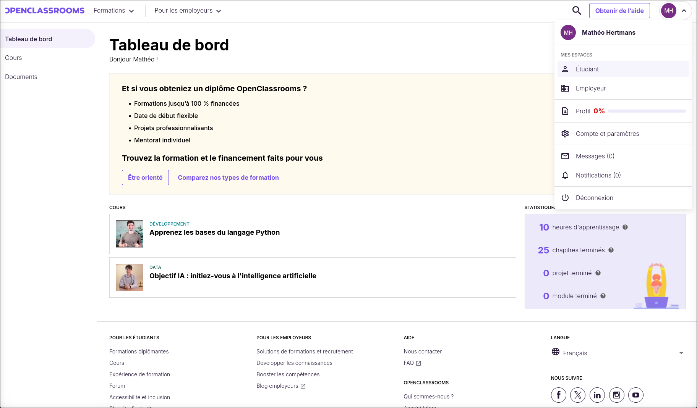 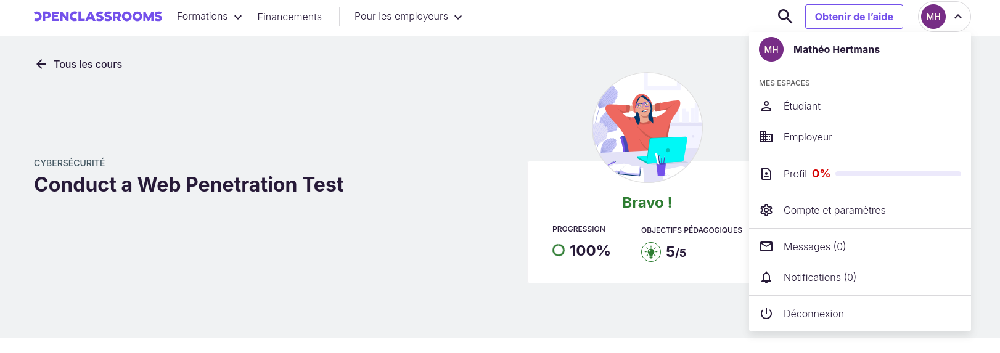 |
|||
| Traitement de données | Formation OpenClassrooms — Initiez-vous au Machine Learning ▾ | 10 | 10 |
|
OpenClassrooms est une plateforme d'e-learning française proposant des formations certifiantes dans le domaine du numérique. Les cours y sont structurés en parcours progressifs, combinant vidéos, lectures et exercices pratiques, avec la possibilité d'obtenir une attestation de complétion — ce que j'ai obtenu pour cette formation. J'ai suivi une formation introduisant le Machine Learning, en abordant ses deux grandes familles : l'apprentissage supervisé et l'apprentissage non supervisé. La formation s'articulait autour d'exercices pratiques sur des jeux de données réels, dont un dataset de diagnostics de performance énergétique de bâtiments tertiaires (ADEME) et un dataset ornithologique sur les manchots de l'archipel Palmer — deux contextes très différents qui m'ont obligé à adapter mon approche selon la nature des données. Ces exercices couvraient les étapes complètes du pipeline : nettoyage des données, gestion des valeurs manquantes, séparation train/test, entraînement de modèles et évaluation des résultats. J'ai notamment travaillé sur des problèmes de classification, ce qui m'a aidé à comprendre concrètement les biais qu'un jeu de données mal préparé peut introduire dans un modèle. Si le Machine Learning n'est pas au cœur du métier de sysadmin, la compréhension du traitement de données devient de plus en plus pertinente dans un contexte où les infrastructures hébergent des pipelines de données et des modèles en production. Cette formation m'a permis de ne pas rester hermétique à un domaine avec lequel je serai probablement amené à interagir, même indirectement.
Preuve de participation
Deux captures d'écran issues de la plateforme OpenClassrooms : la première affichant le nombre d'heures comptabilisées pour la formation, la seconde confirmant la complétion de celle-ci. 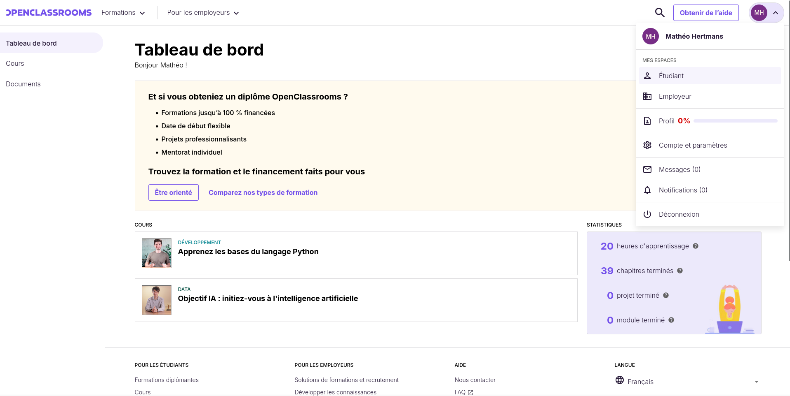 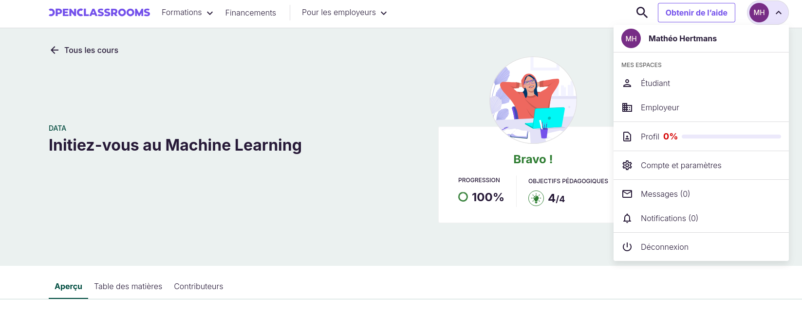 |
|||
| Formations autres | Brevet Européen de Premier Secours (BEPS) ▾ | 10 | 14 |
|
En avril 2026, j'ai suivi la formation au Brevet Européen de Premier Secours à Gembloux, répartie sur deux samedis consécutifs pour un total d'environ seize heures, et dont j'ai obtenu l'attestation nominative à l'issue. La formation couvrait les gestes de premiers secours face à différentes situations d'urgence : victime inconsciente qui respire ou non, hémorragie, brûlure, victime consciente en état de choc. La pédagogie était principalement pratique : mises en situation, manipulation de mannequins, exercices en binôme. Parmi les gestes appris, la procédure de retournement d'une personne inconsciente m'a particulièrement marqué — un geste précis, codifié, qui doit être exécuté correctement pour ne pas aggraver l'état de la victime, et qui illustre bien la philosophie de la formation : dans l'urgence, le bon réflexe vaut mieux que l'improvisation. J'ai choisi de réaliser cette activité dans une logique de polyvalence. Un professionnel de l'informatique travaille souvent en équipe, dans des open spaces, des data centers ou des environnements où une situation d'urgence peut survenir. Savoir réagir de façon adéquate est une compétence humaine fondamentale, indépendante du domaine technique. J'espère sincèrement ne jamais avoir à l'utiliser, mais je suis convaincu que tout professionnel responsable devrait posséder ces réflexes.
Preuve de participation
Certificat nominatif obtenu à l'issue de la formation au Brevet Européen de Premier Secours, attestant de la complétion des deux journées de formation à Gembloux en avril 2026. 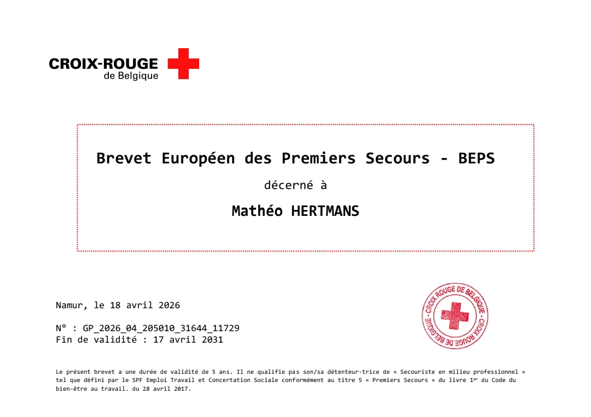 |
|||
| IA | Conférence CAP TECH — Dangers de l'IA générative ▾ | 2h30 | 2h30 |
|
En avril 2026, j'ai assisté à une conférence organisée par le CAP TECH à Louvain-la-Neuve, portant sur les dangers de l'intelligence artificielle générative. Le CAP TECH est un centre académique pluridisciplinaire rattaché à l'UCLouvain, qui organise régulièrement des événements ouverts au public autour des enjeux technologiques et sociétaux contemporains. La conférence réunissait plusieurs intervenants, chacun abordant un angle distinct. Miek De Ketelaere, dont l'intervention m'a particulièrement marqué, traitait des risques liés à l'attachement émotionnel aux IA conversationnelles. Jean-Yves Hayez abordait quant à lui l'impact de ces outils sur les jeunes générations qui ont grandi avec l'IA comme référence quasi-naturelle. Serge Goriely clôturait avec les conséquences de l'IA générative sur la création artistique et la propriété intellectuelle. Une session de questions-réponses, bien que brève, a permis quelques échanges avec le public. Ce qui m'a le plus frappé, c'est la vitesse à laquelle la frontière entre outil et substitut relationnel se brouille pour certains utilisateurs. La question n'est plus uniquement technique — elle est profondément sociale et éthique. En tant que futur professionnel de l'informatique, je serai inévitablement amené à travailler avec des outils basés sur l'IA, à les déployer ou à en gérer l'infrastructure. Il me semble essentiel de ne pas se cantonner à la dimension technique de ces systèmes, mais d'en comprendre également les implications humaines et sociétales. Cette conférence m'a aidé à développer un regard critique que je considère comme une compétence professionnelle à part entière.
Preuve de participation
Photo prise lors de la conférence, me montrant devant le projecteur affichant la première diapositive de la présentation du CAP TECH sur les dangers de l'IA générative. 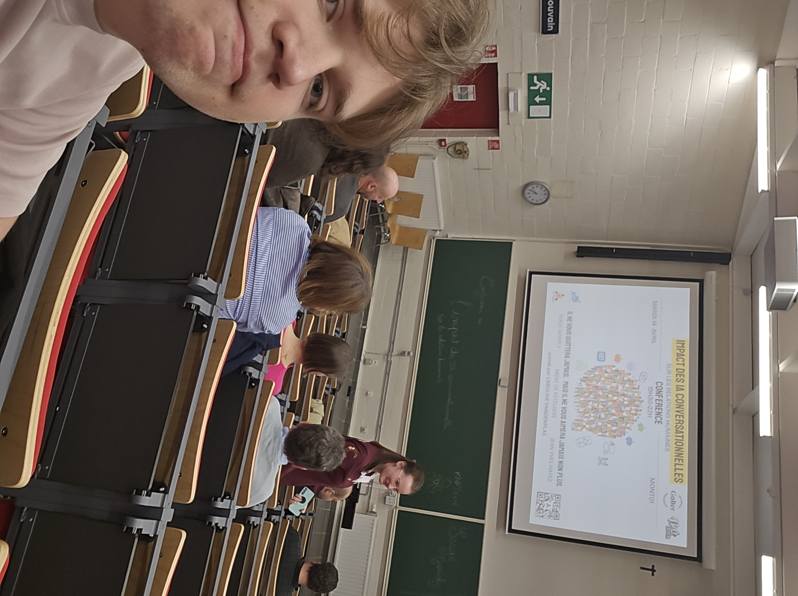 |
|||
| Électronique | Soirée Let's Fix It — EPHEC ▾ | 3 | 3 |
|
La soirée Let's Fix It, organisée à l'EPHEC sur une durée de trois heures, était un événement thématique autour de la réparation, de la réutilisation et du recyclage de matériel informatique. Plusieurs stands animés par des entreprises et associations proposaient des activités concrètes liées à ces thématiques. Deux stands m'ont particulièrement marqué. Le premier était celui du projet Louvain-li-Nux, une communauté locale dédiée aux systèmes d'exploitation GNU/Linux, qui organisait une "discover and install party" — soit une session d'initiation et d'installation de distributions Linux ouverte à tous, accompagnée d'une présentation des alternatives open source aux logiciels propriétaires courants. Ces deux aspects rejoignent directement mes centres d'intérêt : l'environnement Linux d'un côté, et la philosophie du logiciel libre de l'autre, qui prône la transparence, la liberté d'utilisation et le partage des connaissances. Le second était un stand proposant le démontage et remontage d'un FairPhone, un smartphone conçu pour être réparable par l'utilisateur final, sans outillage professionnel ni coût prohibitif, illustrant qu'il est possible de concevoir du matériel grand public avec une vraie logique de durabilité. Cette soirée m'a sensibilisé à une dimension du métier que l'on aborde peu en formation : la relation au matériel physique et sa longévité. Dans un rôle d'administrateur systèmes, on est régulièrement confronté à des décisions liées au renouvellement ou à la réparation d'équipements. Comprendre les enjeux techniques et environnementaux du matériel informatique me semble être une compétence de contexte utile pour prendre de meilleures décisions — et la philosophie du logiciel libre portée par Louvain-li-Nux résonne particulièrement avec ma façon d'aborder l'informatique.
Preuve de participation
Deux photos documentant ma présence à la soirée Let's Fix It : la première à mon arrivée, la seconde à mon départ, permettant de confirmer ma participation effective sur la durée de l'événement. 

|
|||
| Système | Conférence — Cloud avec M365 et Azure Infrastructure ▾ | 2 | 2 |
|
J'ai assisté à une conférence organisée par un ancien étudiant de l'EPHEC, portant sur les solutions Microsoft Azure et Office 365 et leur application concrète en entreprise. La conférence abordait des outils tels qu'Admin Center, Exchange Online et les différentes briques d'infrastructure disponibles via Azure. Le fait que l'intervenant soit lui-même passé par l'EPHEC donnait une dimension concrète et accessible à la présentation : il ne s'agissait pas d'un discours commercial, mais d'un retour d'expérience ancré dans une réalité professionnelle proche de la nôtre. Voir comment ces outils s'intègrent dans le quotidien d'une équipe IT — gestion des utilisateurs, des licences, des services à l'échelle d'une organisation — m'a permis de mieux projeter ce à quoi ressemble concrètement le métier visé. Azure et M365 sont aujourd'hui incontournables dans le paysage des entreprises, quelle que soit leur taille. Pour un futur sysadmin, ne pas connaître ces environnements serait une lacune sérieuse. Cette conférence m'a donné une vision d'ensemble des possibilités offertes par le cloud Microsoft, et m'a motivé à approfondir ces compétences à terme.
Preuve de participation
Mail de confirmation de présence reçu suite à la conférence, attestant de mon inscription et de ma participation à la session sur les solutions Microsoft Azure et M365. 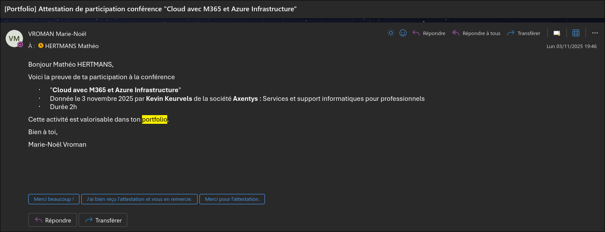 |
|||
| À définir | Activité à venir ▾ | * | * |
|
Cette activité est en cours de planification. L'analyse réflexive sera complétée à l'issue de sa réalisation. |
|||
| Total | 57h30 | 87h30 | |